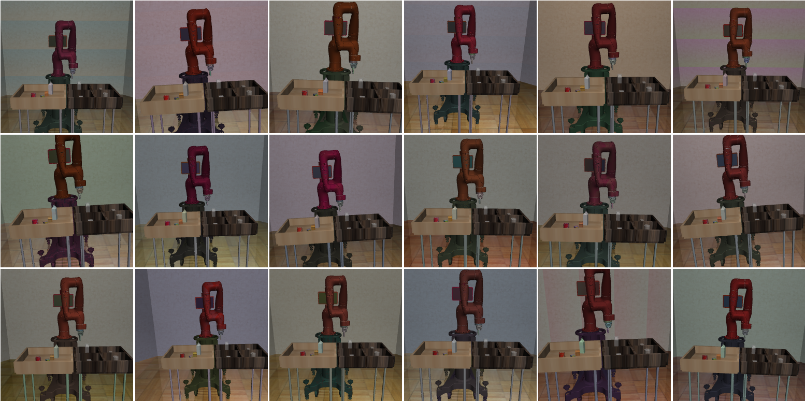
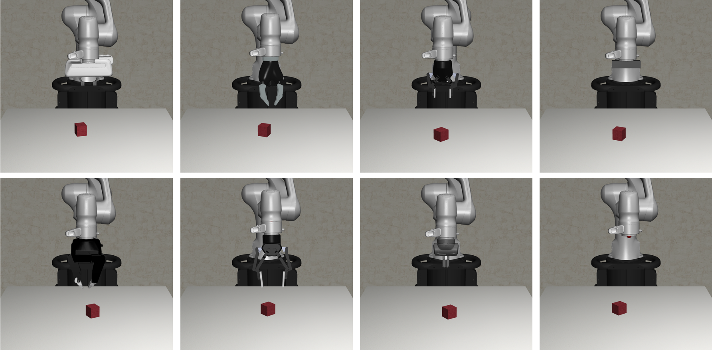

Demo Showcases#
We provide a collection of demo scripts to showcase the functionalities in robosuite.
Attention Mac users!
For these scripts, Mac users who wish to use the default mjviewer renderer need to prepend the “python” command with “mj”: mjpython ...
Environment Configuration#
The demo_random_action.py script is the starter demo script that you should try first. It highlights the modular design of our simulated environments. It enables users to create new simulation instances by choosing one environment, one or more robots, and their controllers from the command line. The script creates an environment instance and controls the robots with uniform random actions drawn from the controller-specific action space. The list of all environments, robots, controllers, and gripper types supported in the current version of robosuite are defined by suite.ALL_ENVIRONMENTS, suite.ALL_ROBOTS, suite. ALL_PART_CONTROLLERS, and suite.ALL_GRIPPERS respectively.
Controller Test#
The demo_control.py script demonstrates the various functionalities of each controller available within robosuite.
For a given controller, runs through each dimension and executes a perturbation test_value from its
neutral (stationary) value for a certain amount of time “steps_per_action”, and then returns to all neutral values
for time steps_per_rest before proceeding with the next action dim.
For example, given that the expected action space of the OSC_POSE controller (without a gripper) is (dx, dy, dz, droll, dpitch, dyaw), the testing sequence of actions over time will be:
***START OF DEMO***
( dx, 0, 0, 0, 0, 0, grip) <-- Translation in x-direction for 'steps_per_action' steps
( 0, 0, 0, 0, 0, 0, grip) <-- No movement (pause) for 'steps_per_rest' steps
( 0, dy, 0, 0, 0, 0, grip) <-- Translation in y-direction for 'steps_per_action' steps
( 0, 0, 0, 0, 0, 0, grip) <-- No movement (pause) for 'steps_per_rest' steps
( 0, 0, dz, 0, 0, 0, grip) <-- Translation in z-direction for 'steps_per_action' steps
( 0, 0, 0, 0, 0, 0, grip) <-- No movement (pause) for 'steps_per_rest' steps
( 0, 0, 0, dr, 0, 0, grip) <-- Rotation in roll (x) axis for 'steps_per_action' steps
( 0, 0, 0, 0, 0, 0, grip) <-- No movement (pause) for 'steps_per_rest' steps
( 0, 0, 0, 0, dp, 0, grip) <-- Rotation in pitch (y) axis for 'steps_per_action' steps
( 0, 0, 0, 0, 0, 0, grip) <-- No movement (pause) for 'steps_per_rest' steps
( 0, 0, 0, 0, 0, dy, grip) <-- Rotation in yaw (z) axis for 'steps_per_action' steps
( 0, 0, 0, 0, 0, 0, grip) <-- No movement (pause) for 'steps_per_rest' steps
***END OF DEMO***
Thus the OSC_POSE controller should be expected to sequentially move linearly in the x direction first, then the y direction, then the z direction, and then begin sequentially rotating about its x-axis, then y-axis, then z-axis. Please reference the documentation of Controllers for an overview of each controller. Controllers are expected to behave in a generally controlled manner, according to their control space. The expected sequential qualitative behavior during the test is described below for each controller:
OSC_POSE: Gripper moves sequentially and linearly in x, y, z direction, then sequentially rotates in x-axis, y-axis, z-axis, relative to the global coordinate frameOSC_POSITION: Gripper moves sequentially and linearly in x, y, z direction, relative to the global coordinate frameIK_POSE: Gripper moves sequentially and linearly in x, y, z direction, then sequentially rotates in x-axis, y-axis, z-axis, relative to the local robot end effector frameJOINT_POSITION: Robot Joints move sequentially in a controlled fashionJOINT_VELOCITY: Robot Joints move sequentially in a controlled fashionJOINT_TORQUE: Unlike other controllers, joint torque controller is expected to act rather lethargic, as the “controller” is really just a wrapper for direct torque control of the mujoco actuators. Therefore, a “neutral” value of 0 torque will not guarantee a stable robot when it has non-zero velocity!
Domain Randomization#
The demo_domain_randomization.py script showcases our domain randomization functionality. Domain randomization can be easily enabled by wrapping an environment with the DomainRandomizationWrapper. At this moment, the randomization functionality focuses on visual variations, including colors, textures, and camera viewpoints.

Sensor Realism#
The demo_sensor_corruption.py script shows how the Observable functionality can be used to model sensor corruption and delay. The Observable class provides easy-to-use interface for simulating real-world sensor noises, variable sensor delays, and sampling frequencies of realistic sensors. These techniques are useful for improving the generalization and robustness of the policies trained on robosuite, facilitating sim2real transfer to the real hardware. For example, see Appendix B of Zhu et al. RSS’2018 and Section V of Tan et al. RSS’2018.
Gripper Selection#
The demo_gripper_selection.py script shows you how to select gripper for an environment. This is controlled by gripper_type keyword argument. The set of all grippers is defined by the global variable robosuite.ALL_GRIPPERS.

Gripper Interaction & Procedural Generation#
The demo_gripper_interaction.py script illustrates the process of importing grippers into a scene and making it interact
with the objects with actuators. It also shows how to procedurally generate a scene with the Modeling APIs of the MJCF utility functions.
Trajectory Replay#
The demo_collect_and_playback_data.py shows how to record robot roll-out trajectory data with the DataCollectionWrapper wrapper and play them back. This wrapper records and stores the environment states in a trajectory to temporary files in .npz format (default path: /tmp). During playback, it loads the stored states from disk and resets the simulator to these states. Example:
$ python demo_collect_and_playback_data.py --environment Door
OpenAI Gym-style APIs#
This demo_gym_functionality.py script shows how to adapt an environment to be compatible with the OpenAI Gym-style APIs. This is useful when using learning pipelines that require supporting these APIs. For instance, this can be used with OpenAI Baselines to train agents with RL. We base this script off of some code snippets found in the Getting Started with Gym section of the OpenAI gym documentation. The following snippet was used to demo basic functionality in OpenAI Gym.
import gym
env = gym.make('CartPole-v0')
for i_episode in range(20):
observation = env.reset()
for t in range(100):
env.render()
print(observation)
action = env.action_space.sample()
observation, reward, done, info = env.step(action)
if done:
print("Episode finished after {} timesteps".format(t+1))
break
To adapt the robosuite APIs to be compatible with OpenAI Gym’s style, this script demonstrates how this can be easily achieved by using the GymWrapper.
Teleoperation#
The demo_device_control.py scripts shows how to teleoperate robot with control devices, such as keyboard or SpaceMouse. The user input device can be set by the --device argument, with the following two options:
Keyboard We use the keyboard to control the end-effector of the robot. The keyboard provides 6-DoF control commands through various keyboard keys.
Note: To run this script with macOS, you must run it with root access.
SpaceMouse We use the SpaceMouse 3D mouse from 3Dconnexion to control the end-effector of the robot. The mouse provides 6-DoF control commands.
We used the SpaceMouse Wireless. The paper below used the same device to collect human demonstrations for imitation learning.
Reinforcement and Imitation Learning for Diverse Visuomotor Skills Yuke Zhu, Ziyu Wang, Josh Merel, Andrei Rusu, Tom Erez, Serkan Cabi, Saran Tunyasuvunakool, János Kramár, Raia Hadsell, Nando de Freitas, Nicolas Heess RSS 2018
Note: This current implementation only supports macOS (Linux support can be added). Download and install the driver before running the script.
DualSense We use the DualSense joystick from DualSense to control the end-effector of the robot. The joystick provides 6-DoF control commands.
Note: Make sure
hidapican detect your DualSense in your computer. In Linux, you may add udev rules in/etc/udev/rules.dto get access to the device without root privilege. For the rules content you can refer to game-device-udev.Mujoco GUI The Mujoco GUI provides a graphical user interface for viewing and interacting with a mujoco simulation. We use the GUI and a mouse to drag and drop mocap bodies, whose poses are tracked by a controller. More specifically, once the mujoco GUI is loaded from running
python demo_device_control.py, you first need to hit thekey to reach the interactive mujoco viewer state. Then, you should double click on a mocap body. Finally, to drag the mocap body, you can hit to or key to translate or rotate the mocap body. For Mac users, you need to use mjpython demo_device_control.py. See the note from mujoco for more details.
Additionally, --pos_sensitivity and --rot_sensitivity provide relative gains for increasing / decreasing the user input
device sensitivity.
Furthermore, please choose environment specifics with the following arguments:
--environment: Task to perform, e.g.,Lift,TwoArmPegInHole,NutAssembly, etc.--robots: Robot(s) with which to perform the task, e.g.,Tiago,Panda,GR1,Sawyer, etc. Note that the environments include sanity checks, such that aTwoArm...environment will not accept configurations with a single, one-armed robot.--config: Exclusively applicable and only should be specified forTwoArm...environments. Specifies the robot configuration desired for the task when two robots are inputted. Options are {parallelandopposed}parallel: Sets up the environment such that two robots are stationed next to each other facing the same direction. Expects a 2-tuple of robot names to be specified in the--robotsargument.opposed: Sets up the environment such that two robots are stationed opposed from each other, facing each other from opposite directions. Expects a 2-tuple of robot names to be specified in the--robotsargument.
Examples:
For normal single-arm environment:
$ python demo_device_control.py --environment PickPlaceCan --robots Sawyer
For two-arm bimanual environment:
$ python demo_device_control.py --environment TwoArmLift --robots Tiago
For two-arm multi single-arm robot environment:
$ python demo_device_control.py --environment TwoArmLift --robots Sawyer Sawyer --config parallel
Video Recording#
The demo_video_recording.py script shows how to record a video of robot roll-out with the imageio library. This script uses offscreen rendering. This is useful for generating qualitative videos of robot policy behaviors. The generated video is in the mp4 format. Example:
$ python demo_video_recording.py --environment Lift --robots Panda
Rendering Options#
The demo_renderers.py script shows how to use different renderers with the simulation environments. Our current version supports the default MuJoCo renderer. More information about these renderers can be found in the Renderer module. Example:
$ python demo_renderers.py --renderer default
The --renderer flag can be set to mujoco or default
Exporting to USD#
Exporting to USD allows users to render robosuite trajectories in external renderers such as NVIDIA Omniverse and Blender. In order to export to USD you must install the required dependencies for the exporter.
$ pip install usd-core pillow tqdm
Once the dependencies are installed, the USD exporter can be imported via from robosuite.utils.usd import exporter. The USDExporter class in the exporter module handles exporting all nessecary assets and USD files associated with a robosuite trajectory.
First, instantiate a robosuite environment. Each environment has an MjModel and MjData instance associated with it. These attributes can be retrieved using
model = env.sim.model._model
data = env.sim.data._data
Both model and data are used by the USD exporter. Once a robosuite environment is defined, create a USDExporter object with the following arguments.
model(required): an MjModel instance.max_geom: Optional integer specifying the maximum number of geoms that can be rendered in the same scene. If None this will be chosen automatically based on the estimated maximum number of renderable geoms in the model.output_directory_name: name of root directory to store outputted frames and assets generated by the USD renderer. and assets by the USD renderer.light_intensity: default intensity of the lights in the external renderer.shareable: use relative paths to assets instead of absolute paths to allow files to be shared across users.online: set to true if using USD exporter for online rendering. This value is set to true when rendering with Isaac Sim. If online is set to true, shareable must be false.framerate: framerate of the exported scene when renderedcamera_names: list of fixed cameras defined in the mujoco model to render.stage: predefined stage to add objects in the scene to.verbose: decides whether to print updates.
USDExporter is adapted from MuJoCo. In order to add a new frame in the outputted USD trajectory, call update_scene in the exporter module.
exp = exporter.USDExporter(model=model, output_directory_name="usd_demo")
exp.update_scene(data)
This updates all geoms in the scene with their current poses from simulation. To save a USD trajectory, use the save_scene method.
exp.save_scene(filetype="usd")
Users are able to save scenes as .usd, .usda, or .usdc files. For a more comprehensive example of the USD renderer, please refer to the demo_usd_export.py script. This demonstration allows users to teleoperate a robot with a device (i.e. keyboard or spacemouse) and save the collected trajectory as a USD file.